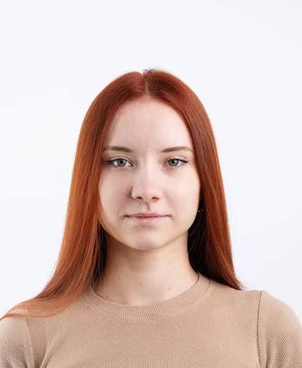

Convierta sus datos en decisiones con estadística e inteligencia artificial
Servicios profesionales de análisis estadístico, machine learning y redes neuronales para empresas, instituciones e investigadores.
Nuestra empresa
Somos un equipo de estadísticos y científicos de datos que combina rigor metodológico con técnicas modernas de aprendizaje automático. Nuestro compromiso es entregar resultados claros, reproducibles y útiles para su toma de decisiones.
Misión
Hacer accesible el análisis avanzado de datos a organizaciones de todos los tamaños.
Rigor
Validación estadística, interpretación honesta de resultados y documentación completa.
Confidencialidad
Sus datos se tratan bajo acuerdos de confidencialidad y buenas prácticas de seguridad.
Nuestro equipo
Andres Martínez
Directora · Estadística
Carlos Rivera
Machine Learning
Jorge Gómez
Redes Neuronales

Laura Peña
Visualización y BI
Servicios
Desde el análisis descriptivo hasta modelos predictivos con redes neuronales.
Análisis estadístico
Estadística descriptiva e inferencial, pruebas de hipótesis, ANOVA, regresión y diseño de experimentos.
Modelos predictivos
Regresión, árboles, Random Forest, Gradient Boosting y SVM para pronóstico y clasificación.
Redes neuronales
Perceptrones multicapa, redes convolucionales (CNN) y recurrentes (LSTM) para datos complejos.
Series de tiempo
ARIMA, suavizamiento exponencial y modelos de aprendizaje profundo para pronósticos.
Segmentación y clustering
K-means, jerárquico y reducción de dimensiones (PCA) para descubrir patrones.
Asesoría de tesis e investigación
Apoyo metodológico, análisis de datos y redacción de resultados para trabajos académicos.
Cómo trabajamos
Un proceso transparente de principio a fin.
Diagnóstico
Entendemos su objetivo y revisamos la calidad de sus datos.
Preparación
Limpieza, transformación e ingeniería de variables.
Modelado
Comparamos modelos estadísticos y de ML con validación cruzada.
Entrega
Informe, visualizaciones y código reproducible.
Tecnología
Trabajamos con herramientas estándar de la industria y la ciencia.
Novedades
Compartimos nuestras últimas innovaciones, guías y proyectos en el campo de la ciencia de datos.
Pronóstico con redes LSTM
Ya ofrecemos modelos de aprendizaje profundo para series de tiempo.
📄 Leer documento (PDF)
Pronóstico con redes LSTM
Las redes de memoria a corto y largo plazo (LSTM) son un tipo de red neuronal recurrente diseñada para aprender dependencias en secuencias de datos, como ventas mensuales, demanda de energía o variables climáticas.
A diferencia de los modelos clásicos como ARIMA, las LSTM pueden capturar relaciones no lineales y utilizar varias variables al mismo tiempo, lo que resulta útil cuando existen muchos factores que influyen en la serie.
¿Cuándo conviene usarlas?
- Series con patrones complejos o no lineales.
- Disponibilidad de suficientes observaciones históricas.
- Necesidad de incorporar variables externas.
Siempre comparamos el resultado contra modelos estadísticos tradicionales y lo validamos con datos que el modelo no ha visto, para recomendar la opción más adecuada y no la más sofisticada.
¿Regresión o red neuronal?
Cómo elegir el modelo adecuado según el tamaño y tipo de sus datos.
📄 Leer documento (PDF)
¿Regresión o red neuronal?
La regresión es fácil de interpretar y funciona bien con pocos datos y relaciones sencillas. Permite explicar cuánto influye cada variable y medir la incertidumbre con intervalos de confianza.
Las redes neuronales ofrecen más flexibilidad para relaciones complejas, imágenes, texto o series largas, pero necesitan más datos y son más difíciles de interpretar.
Una regla práctica
- Pocos datos y necesidad de explicar: regresión.
- Datos tabulares medianos: árboles y Random Forest.
- Muchos datos y patrones complejos: redes neuronales.
Lo recomendable es probar varias alternativas con validación cruzada y elegir según el desempeño y el objetivo del proyecto.
Introducción a ML para empresas
Capacitación práctica para equipos que inician en análisis de datos.
📄 Leer documento (PDF)
Taller: Introducción a ML para empresas
Capacitación práctica dirigida a equipos que desean empezar a usar sus datos para tomar mejores decisiones, sin necesidad de experiencia previa en programación.
Modalidad, fechas y costo: por definir según el grupo.
Contenido
- Fundamentos de estadística descriptiva.
- Qué es el machine learning y cuándo aplicarlo.
- Introducción a modelos predictivos.
- Lectura e interpretación de resultados.
- Caso práctico con datos de la empresa.
Para inscribirse, use el formulario de contacto.
Contacto y cotización
Escríbanos
Cuéntenos su proyecto y le responderemos con una propuesta.
Dirección: Su dirección aquí
Teléfono: +00 000 000 0000
Correo: info@neurostat.com